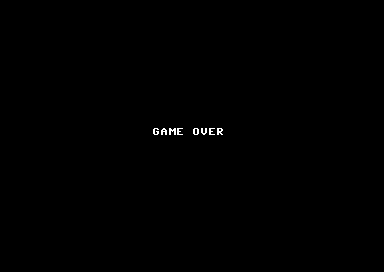

<meta charset="utf-8">
<meta name="viewport" content="width=device-width, initial-scale=1">
<title>{{title}}</title>
<link rel="stylesheet" href="../../lib/site.css">
<!-- tabs -->
<header class="hero"><p class="eyebrow">{{year}} · {{publisher}}</p><h1>{{title}}</h1><p class="sub">The two disks share the fight. They take different ways back to the title.</p></header>
<main class="wrap">
<section id="game-over" data-part="loader-to">
<h2>The same Game Over screen comes from two routines</h2>
<figure class="plate"><figcaption>The TO disk, captured before the game reloads its title.</figcaption></figure>
<p>Both disks request the title after a run ends. Each loader copies the same nine characters into the same screen position. The two VICE captures match pixel for pixel.</p>
<p>The TO loader draws the text at <a href="source-loader-to.html#811D">$811D</a>. The AD loader draws it at <a href="source-loader-ad.html#1540">$1540</a>. Compare the <a href="reference/ad-game-over.png">AD capture</a> with the TO image above.</p>
</section>
<section id="friendly-contact" data-part="resident">
<h2>Your partner can get in the way</h2>
<p>Two fighters can share the street, and the engine checks hits between them. For the tested rightward strike, it begins by comparing the fighters' heights on the screen. A difference of two pixels still counts. Three pixels sends the attack to another check. The second fighter must also be within 19 pixels on the right for this branch to register a hit.</p>
<p>A controlled test ran the <a href="source-resident.html#7408">original contact routine</a> at 35 position combinations per disk. Both copies accepted the same positions. The test held the attack and reaction states fixed while moving the defender.</p>
</section>
</main>
